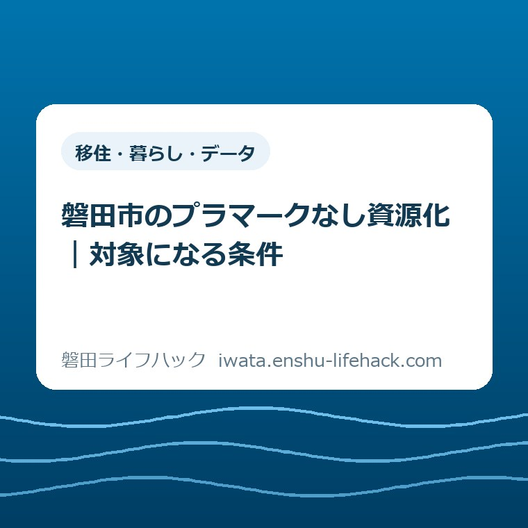

移住・暮らし・データ
磐田市のプラマークなし資源化｜対象になる条件

この記事の要点
Q. プラマークがない日用品も、磐田市で資源に出せる？
A. 磐田市では2026年4月から条件付きで出せます。プラスチックだけでできており、大きさ50cm未満・厚さ5mm未満で汚れがない物が対象です。ただし電池内蔵品などの危険物や土を直接入れたプランターなどは除きます。今日の一歩は品物一つの材質確認。個別の判断は市公式で確認してください。
分別は、袋に入れる前から仕事になっている
磐田市のプラスチック資源に出せるかは、品物ごとの材質や寸法、汚れで変わります。マークがないという理由だけで対象外にはなりません。ただし、プラスチックに見える日用品を全部入れてよいわけでもありません。2026年9月13日に市の公式情報を確認しました。
食後の容器をすすぎ、乾かす場所を空け、袋を置いておく。日々の分別を担う人は、ごみを運ぶ前にすでに手を動かしています。そこへ「対象が増えました」と知らせが来ても、判断まで簡単になるとは限りません。見慣れない品物の底をひっくり返す手間が加わります。
大石浩之（磐田市／不動産業）です。私は、家庭の分別を説明するときには、その手間から話を始めたいと考えています。資源になる品物が増える良さと、家の中で確認する仕事が増えることは、両方見ておく必要があります。この記事は収集日の一覧ではなく、対象が広がった意味を整理するものです。
この記事を読んだ後に家中を調べ直す必要はありません。捨てる予定の品物を一つ選び、何でできているか確かめる。その一つについて判断材料が増えれば十分です。収集日の確認が必要な段階では、ごみ分別・収集カレンダーの案内を使えます。
2026年4月の変更は「マークなしにも入口ができた」
磐田市「プラスチック資源の出し方」は、2026年4月から資源として出せる物が増えたと案内しています。従来の「プラスチック製容器包装」は「プラスチック」という名称に変わりました。プラマークのない製品プラスチックにも、条件を満たせば資源化の道ができたという変更です。
市のページは、プラマークありを「プラスチック製容器包装」、なしを「製品プラスチック」と分けて説明しています。ここを読むと、マークの有無だけを資源の可否と結び付けられない理由が見えてきます。対象が容器包装だけに限られなくなったためです。
容器包装と、品物そのものとして使う日用品は、役割が違います。たとえば保存容器や定規は、市が対象となる製品の例として示している物です。もっとも、同じ名前の品物でも作りは異なります。例の絵に似ているというだけで、手元の物まで判定済みにはできません。
意外に感じるのは、マークがない品物も、条件を満たせばマーク付きと同じ袋に入れられる点です。市はマークのあり・なしで袋を分ける必要はないとしています。対象の入口は二つでも、家庭で別々の資源袋を用意する仕組みではありません。
一方、「同じ袋に入る」という出し方と、「その品物が対象になる」という判断は別です。袋を一つにできることを先に覚えると、材質や厚さの確認を飛ばしやすくなります。対象かを確かめ、その後で袋と収集日を確認する順番で読むと、変更点を取り違えずに済みます。
マークなしは、材質・寸法・汚れを全部確認する
磐田市が製品プラスチックに示す条件は、プラスチックだけでできていること、大きさ50cm未満かつ厚さ5mm未満であること、汚れがついていないことです。市は寸法を一項目にまとめて、三つの条件をすべて満たすよう示しています。どれか一つで合格する方式ではありません。
材質の条件で見るのは、本体の見た目だけではありません。金属の取っ手やねじ、別素材の部品がついていれば、そのまま「プラスチックだけ」とは言えません。透明か色付きか、硬いか柔らかいかという印象だけでも、材質は確定しません。
寸法の「未満」は、境目の数値を含まない表現です。大きさ50cmちょうど、厚さ5mmちょうどは、この資源化条件に入りません。「50cmまで」「5mmまで」と覚え直すと意味が変わります。家族へ伝えるときも、未満という部分は残しておきたいところです。
大きさと厚さは別に見る必要があります。小さな製品でも厚みの条件を満たすとは限らず、薄い物でも大きさの条件を超えることがあります。「小さいから資源」という近道は使えません。大きさだけを測って袋へ入れる前に、厚さも確認する項目だと覚えておくと役立ちます。
汚れについて、市は軽くすすいで落ちればプラスチックとして出すよう案内しています。ここから「何時間洗ってでも資源へ」と読み足す必要はありません。落ちない汚れを残したまま対象と決めず、品目に応じた分別を公式案内で確認します。洗ったという行為だけで、条件を満たすわけではありません。

条件に似ていても、対象外の品物がある
磐田市「プラスチック資源の出し方」には、材質・寸法・汚れの条件とは別に注意事項があります。充電式電池等を内蔵する機器、ライター、刃物、注射器、医療用チューブなどは入れないよう示されています。外側がプラスチックでも、資源袋へ入れてよいという答えにはなりません。
電池を使う小型の品物は、外装を見て材質確認を終わらせないことです。「小さくてきれい」という判断では中身の危険を拾えません。この記事の寸法条件を使って、電池内蔵品を対象に戻すこともできません。処分する際には、その製品に対応した市の分別案内へ進みます。
ゴム製品とシリコン製品は、市の案内では可燃ごみです。プラスチックのように見えたり、台所で似た用途に使われたりしても、同じ扱いとは限りません。保存容器に別素材のパッキンがある場合などは、本体だけの材質表示を品物全体の答えにしない読み方が必要です。
ペットボトルは引き続きペットボトルの回収日に出す扱いです。加工済みのペットボトルは可燃ごみと記載されています。プラスチックという大きな言葉でくくると、この別ルートを見落とします。資源化の対象拡大は、従来の区分が全部一緒になったという意味ではありません。
もう一つ、土を直接入れたプランターなどは可燃ごみとされています。土は落とすよう求められていますが、土を落とせばプラスチック資源へ変わるという案内ではありません。「洗えばよい」という一般的な読み方より、この個別の注意事項を先に当てはめます。
対象外の物を見つけたとき、無理に分解して資源化へ寄せることを、私は勧めません。作業中にけがをするほどの手間を家庭へ足す必要はないからです。分解後の扱いが分からない品物は、元の品名と部品の材質を伝えて確認するほうが、判断の根拠が残ります。
テープのケースは「名前が同じ」でも一括りにしない
磐田市「家庭ごみ分別ガイドブック」の掲載内容訂正は、テープとケースを分けて読む手掛かりです。2026年4月15日更新のページでは、可燃ごみのカセットテープ・ビデオテープの説明から、ケースを含むという扱いを訂正しています。ケースの分別は材質ごとに異なると明記されています。
この訂正から言えるのは、テープ本体とケースを自動的に同じ区分へ入れないということです。「ケースは全部プラスチック資源になった」とまでは書かれていません。マークなしのケースを資源として考えるなら、製品プラスチックの条件と注意事項を、手元の物に照らして確認します。
ケースという品名には、中に入れる物の用途が表れています。しかし分別で必要な材質までは、名前だけでは分かりません。紙の部分や他素材の部品があるか、厚みはどうかという確認は別に残ります。古い説明を覚えている家族にも、この訂正箇所なら具体的に共有できます。
家の片付けでテープとケースがまとまって出てきた場合も、最初から全量を同じ袋へ押し込まないほうが確認しやすくなります。これは作業の進め方についての私の提案です。まず一組だけ取り出して、本体とケースのどちらを調べているか、対象をはっきりさせます。
家一軒を片付ける量の問題は、個々の材質の問題だけでは解決しません。運ぶ量や片付けの期限まで考える必要がある場合は、実家片付けと粗大ごみのルートを整理した記事へつなげてください。小さな品物の分別と、大量の家財の搬出は、別々に段取りを立てます。
良い点——日用品にも、資源へ戻す選択肢ができた
私は、マークのない日用品にも条件付きで資源化の入口ができた点を評価します。分別する人が材質を確かめた結果を、出し先の選択に生かせるからです。「マークが見つからないから終わり」という判断から、一段先へ進める仕組みになっています。
袋をマーク別に分けなくてよい点も、暮らしの側から見た良い点です。台所や勝手口には、資源を置く場所にも限りがあります。種類が増えるたびに袋の置き場も増やすことを前提にしないのは、日々片付ける側にとって扱いやすい部分だと私は考えます。
市の説明は、材質・寸法・汚れという確認項目を示しています。私は、この条件を家族で共有できる点にも意味があると考えます。誰か一人の記憶に頼るより、同じ品物を見ながら「どの条件がまだ分からないか」を話せるほうが、判断を引き継ぎやすくなるからです。
対象品の例と、入れない品物の注意事項が同じページにあることも役立ちます。資源になる側だけでなく、別の出し方が必要な物まで一緒に確かめられます。私は、公式ページを家族へ共有するときには、例の画像だけを切り取らず、注意事項まで見られるURLを渡したいと考えています。
注文したい点——判断の仕事を一人へ積み上げない
私は、対象拡大の説明には「迷う物をどう確認するか」まで添えてほしいと考えます。分別する人の手間を、無料で無限に使えるものにしてはいけない。資源化という目的に賛成することと、家庭で毎回材質を調べる負担を黙って引き受けることは、同じではありません。
これは条件をなくしてほしいという意見ではありません。家庭で見つけやすい表示の場所や、分からないときに伝える内容が、条件と一緒に分かると助かるという注文です。正しい区分の名称だけでなく、手元の品物を調べる順番まで示されれば、説明を使う距離が短くなります。
厚さが均一でない品物を見たとき、私もどこを基準に測ればよいか迷います。確認した市のページだけでは、複雑な形の測定箇所まで一律に判断できません。だから「一番薄い所が5mm未満ならよい」といった独自の基準を、この記事で付け足すことはしません。
品物の底に材質名があっても、その表示が本体だけを指すのか、付属部分まで含むのかで迷うことがあります。私は、分からない箇所を一つに絞れる説明が使いやすいと考えます。「全部分かりません」から「取っ手の材質が分かりません」へ進めば、確認する側も答えを探しやすくなります。
対案・結論——今日の一歩は、品物一つの材質確認
今日できる一歩は、家庭で捨てる予定のマークなしの日用品を一つ選び、材質表示を確かめることです。まず底面や裏面、本体とふたの表示を見ます。説明書が手元にあれば、部品ごとの材質欄も手掛かりになります。今日の作業を「家中の分別のやり直し」に広げる必要はありません。
材質表示が見つかったら、表示がどの部分を指すかも見ます。本体だけ分かった場合は、本体だけ分かったと扱います。付属部品まで推測で埋めないことです。表示が見当たらなければ、材質が未確認だと分かったところでいったん止めても、次に聞く内容は明確になります。

次に処分を判断する段階で、材質に加えて寸法・汚れ・対象外品の注意事項を照合します。市への問い合わせなら、「マークなしの何という品物か」「どの部品の材質が不明か」「大きさや厚さを確認できたか」を伝えると、質問を具体的にできます。これは問い合わせの準備についての提案です。
市の公式ページには、ごみ資源循環課の資源循環推進グループの連絡先として、電話0538-37-4812が掲載されています。個別の材質や厚さの判断に迷う場合は、自己流で袋へ入れる前に担当窓口へ確認してください。メーカーの材質説明は品物を知る材料であり、市の分別区分を決める回答とは別です。
対象と確認できた後は、透明の市指定袋を使う案内になります。マークの有無で袋を分ける必要はありません。袋や集積所などの基本を調べる場合は、ごみの出し方の案内で確認先を探せます。この記事では地区別の収集日を列挙せず、品物の条件に絞っています。
大石の視点——確認した一つを、家族で使える知識にする
私は、暮らしの仕組みを評価するとき、誰がその確認を引き受けるかまで考えたいと思っています。家を片付ける段取りも、日々の分別も、最後には誰かの手が必要です。制度の説明を読んだだけで、その人の作業が終わったことにはできません。
私なら、調べた一品について、材質が分かった部分と未確認の部分だけを家族へ伝えます。「これは全部資源」と広げず、「この本体の材質は確認できた」と範囲を残します。同じ名前でも作りが違う品物へ、確認結果がひとり歩きするのを避けたいからです。これは実話の紹介ではなく、私の考え方です。
家庭の役割分担としては、袋を出す人だけに調査まで任せず、品物を使っていた人が材質の情報を添えるやり方を提案します。購入時の説明が残っているか、部品が取り替えられていないか。分別する人へ渡す前に一つ情報を足せば、調べ直す負担を分けられます。
マークなしでも資源になるという変更を、家の中の小さな確認につなぐ。私は、そのくらいの大きさで始めるほうが続けやすいと考えます。今日の成果は一袋を完成させることより、一つの材質が分かったこと。最終的な対象の判断は、必ず磐田市の公式ページと担当窓口で確認してください。
よくある質問
磐田市のマークなし製品プラスチックについて、対象条件と間違えやすい点を三つの質問で確認します。以下は2026年9月13日に確認した公式案内に基づく回答です。個別の品物は、材質・寸法・汚れと注意事項を合わせて判断します。
プラマークがない日用品も資源に出せますか？
磐田市では2026年4月から条件付きで出せます。プラスチックだけでできており、大きさ50cm未満・厚さ5mm未満で、汚れがないことが条件です。ただし電池内蔵品などの危険物や、土を直接入れたプランターなどは対象外です。品名だけで決めず、市の注意事項も確認してください。
50cmちょうど、厚さ5mmちょうどでも対象ですか？
対象条件は50cm未満かつ厚さ5mm未満なので、どちらもちょうどの値は含みません。袋に入る大きさでも、寸法条件を満たしたことにはなりません。厚さが一定でない品物など、測る箇所に迷う場合は独自に判定せず、磐田市の担当窓口へ品物の形や材質を伝えて確認してください。
ビデオテープのケースは本体と同じ可燃ごみですか？
磐田市のガイドブック訂正では、テープ本体とケースを一括りにせず、ケースは材質ごとに分別が異なるとしています。ケースなら全部資源になるという意味ではありません。マークなしのプラスチック製ケースは、材質・大きさ・厚さ・汚れなどを確認し、市公式の条件に照らしてください。
参考にした公式情報
- プラスチック資源の出し方／磐田市（2026年8月4日更新、2026年9月13日確認）
- 家庭ごみ分別ガイドブック／磐田市（2026年4月15日更新、2026年9月13日確認）

最終確認日：2026-09-13 ／ 本記事は公表情報と執筆者の見解を分けて記載しています。制度・数値・公開状況は変更される場合があるため、個別の分別判断は市の担当窓口へ確認し、最新情報は磐田市公式ページでご確認ください。